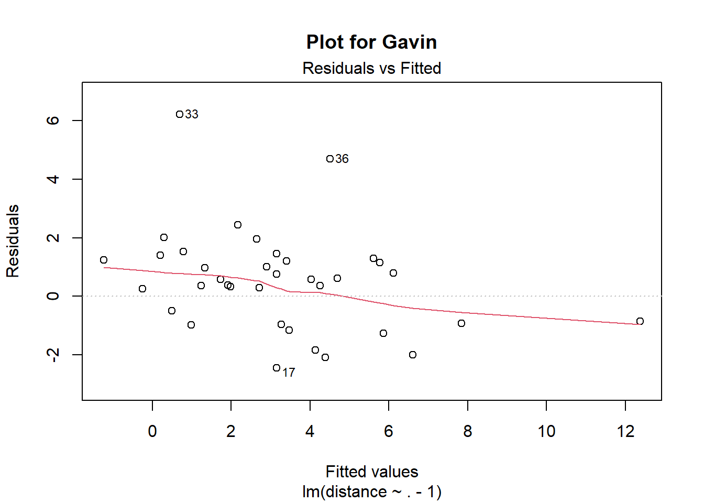
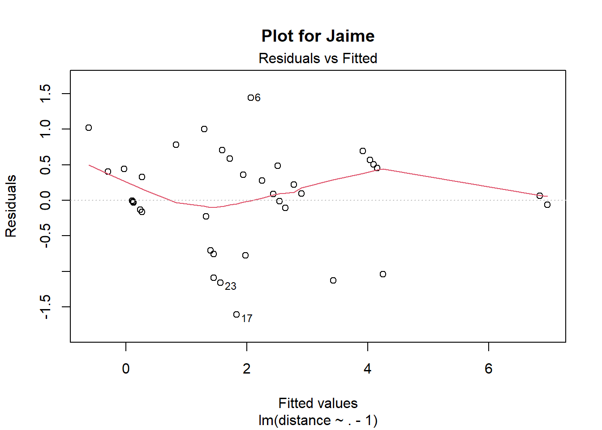

How can you estimate the value of research output? One way is to do pairwise comparisons, e.g., to ask specialists how much more valuable Darwin’s The Original of Species is than Dembski’s Intelligent Design. You can use these relative valuations to estimate absolute valuations.
Summary
Estimating values is hard. One way to elicit value estimates is ask researchers to compare to different items \(A\) and \(B\), asking how much better \(A\) is than \(B\). This makes the problem more concrete than just asking “what is the value of \(A\)?”. The Quantified Uncertainty Institute has made an app for doing this kind of thing, described here.
Nuño Sempere had a post about eliciting comparisons of research value from \(6\) effective altruism researchers.
This post proposes some technical solutions to problems introduced to me in Nuño’s post. In particular, it includes principled ways to
Estimate subjective values,
Measure consistency in pairwise value judgments,
Measure agreement between the raters,
Aggregate subjective values.
I use these methods on the data from Nuño’s post.
I’m assuming you have read Nuño’s post recently. I think this post will be hard to read if you haven’t.
This is written as a self-contained Quarto file. I’ve hidden most of the R code to make it readable, but it’s available in source.
What’s this about
This table contains the \(36\) responses from Gavin Leech. As you can see, he values Superintelligence \(100\) more than the Global Priorities Institute’s Research Agenda.
| source | target | distance |
|---|---|---|
| Thinking Fast and Slow | The Global Priorities Institute’s Research Agenda | 100 |
| The Global Priorities Institute’s Research Agenda | The Mathematical Theory of Communication | 1000 |
| Superintelligence | The Mathematical Theory of Communication | 10 |
| Categorizing Variants of Goodhart’s Law | The Vulnerable World Hypothesis | 10 |
| Shallow evaluations of longtermist organizations | The motivated reasoning critique of effective altruism | 10 |
| Shallow evaluations of longtermist organizations | Categorizing Variants of Goodhart’s Law | 100 |
| The motivated reasoning critique of effective altruism | Categorizing Variants of Goodhart’s Law | 10 |
| Shallow evaluations of longtermist organizations | Thinking Fast and Slow | 10 |
| Thinking Fast and Slow | The motivated reasoning critique of effective altruism | 1 |
| The motivated reasoning critique of effective altruism | The Global Priorities Institute’s Research Agenda | 1000 |
| Categorizing Variants of Goodhart’s Law | The Global Priorities Institute’s Research Agenda | 100 |
| The Vulnerable World Hypothesis | The Global Priorities Institute’s Research Agenda | 10 |
| Reversals in Psychology | A Model of Patient Spending and Movement Building | 10 |
| Database of orgs relevant to longtermist/x-risk work | What are some low-information priors that you find practically useful for thinking about the world? | 5 |
| Reversals in Psychology | Database of orgs relevant to longtermist/x-risk work | 1 |
| Database of orgs relevant to longtermist/x-risk work | A Model of Patient Spending and Movement Building | 10 |
| What are some low-information priors that you find practically useful for thinking about the world? | A Model of Patient Spending and Movement Building | 2 |
| Center for Election Science EA Wiki stub | Extinguishing or preventing coal seam fires is a potential cause area | 1000 |
| A comment on setting up a charity | Center for Election Science EA Wiki stub | 10 |
| A comment on setting up a charity | Reversals in Psychology | 200 |
| Center for Election Science EA Wiki stub | Reversals in Psychology | 20 |
| Reversals in Psychology | Extinguishing or preventing coal seam fires is a potential cause area | 50 |
| Database of orgs relevant to longtermist/x-risk work | Extinguishing or preventing coal seam fires is a potential cause area | 50 |
| What are some low-information priors that you find practically useful for thinking about the world? | Extinguishing or preventing coal seam fires is a potential cause area | 10 |
| A Model of Patient Spending and Movement Building | Extinguishing or preventing coal seam fires is a potential cause area | 1 |
| A comment on setting up a charity | Shallow evaluations of longtermist organizations | 1000 |
| Center for Election Science EA Wiki stub | Shallow evaluations of longtermist organizations | 100 |
| Reversals in Psychology | Shallow evaluations of longtermist organizations | 100 |
| Database of orgs relevant to longtermist/x-risk work | Shallow evaluations of longtermist organizations | 100 |
| Thinking Fast and Slow | The Mathematical Theory of Communication | 1e+05 |
| What are some low-information priors that you find practically useful for thinking about the world? | Shallow evaluations of longtermist organizations | 100 |
| Shallow evaluations of longtermist organizations | A Model of Patient Spending and Movement Building | 1 |
| Thinking Fast and Slow | A Model of Patient Spending and Movement Building | 1000 |
| The motivated reasoning critique of effective altruism | A Model of Patient Spending and Movement Building | 5 |
| A Model of Patient Spending and Movement Building | Categorizing Variants of Goodhart’s Law | 10 |
| Extinguishing or preventing coal seam fires is a potential cause area | Categorizing Variants of Goodhart’s Law | 10000 |
| Thinking Fast and Slow | The Mathematical Theory of Communication | 1e+05 |
| The Global Priorities Institute’s Research Agenda | Superintelligence | 100 |
My first goal is to take relative value judgments such these and use them to estimate the true subjective values. In this case, I want to estimate the value that Gavin Leech places on every item in the table above, i.e.,
| levels | |
|---|---|
| 1 | A comment on setting up a charity |
| 2 | A Model of Patient Spending and Movement Building |
| 3 | Categorizing Variants of Goodhart’s Law |
| 4 | Center for Election Science EA Wiki stub |
| 5 | Database of orgs relevant to longtermist/x-risk work |
| 6 | Extinguishing or preventing coal seam fires is a potential cause area |
| 7 | Reversals in Psychology |
| 8 | Shallow evaluations of longtermist organizations |
| 9 | Superintelligence |
| 10 | The Global Priorities Institute’s Research Agenda |
| 11 | The Mathematical Theory of Communication |
| 12 | The motivated reasoning critique of effective altruism |
| 13 | The Vulnerable World Hypothesis |
| 14 | Thinking Fast and Slow |
| 15 | What are some low-information priors that you find practically useful for thinking about the world? |
where Categorizing Variants of Goodhart’s Law has value fixed to \(1\). I will use the number scheme above throughout the post.
A model with multiplicative error terms
Motivation and setup
Let \(\eta_i\) be the true subjective value of item \(i\), counting starting from \(1\). We will let \(\eta_3=1\) in our setup, as Manheim and Garabrant’s Categorizing Variants of Goodhart’s Law was fixed to \(1\) in Nuño’s study, but we could have fixed any other item if we wanted to. Ideally, we would have observed the “distances” \(d_{ij}=\eta_i/\eta_j\) directly, but we don’t. Instead, we observe the distances with noise, \(\hat{d}_{ij}\). We’ll assume a multiplicative model for these noise measurements:
\[ \hat{d}_{ij} = \frac{\eta_i}{\eta_j}\cdot e^{\sigma \epsilon_{ij}}, \] where \(e^{\sigma \epsilon_{ij}}\) is a positive noise term with standard deviation \(\sigma\) on the log-scale. Now define \(Y_{ij} = \log \hat{d}_{ij}\) and \(\beta_i = \log \eta_i\). Observe that \(\beta_3 = 0\) by assumption. Now take logarimths on both sides of the equation above to get
\[ Y_{ij} = \beta_i - \beta_j + \sigma\epsilon_{ij}, \]
which is a linear regression model. It looks like a two-way analysis of variance, but isn’t quite that, as we are only dealing with one factor here (the evaluated research) which appears twice in each equation. That said, the only difficulty in estimating this model is to make a model matrix for the regression coefficients.
Incidence matrices
The questions Gavin answered in the table above can be understood as a directed graph; I’ll call it the question graph. Gavin’s question graph can be seen below.

Directed graphs can be defined by their incidence matrices. If \(G\) is a directed graph with \(k\) nodes and \(n\) edges its incidence matrix \(B\) is the \(n\times k\) matrix with elements \[B_{ij}=\begin{cases} -1 & \text{if edge }e_{j}\text{ leaves vertex }v_{i},\\ 1 & \text{if edge }e_{j}\text{ enters vertex }v_{i},\\ 0 & \text{otherwise.} \end{cases}\]
For instance, Gavin’s incidence matrix is
| 0 | 0 | 0 | 0 | 0 | 0 | 0 | 0 | 0 | 0 | 0 | 0 | 0 | 0 | 0 | 0 | 0 | 0 | -1 | -1 | 0 | 0 | 0 | 0 | 0 | -1 | 0 | 0 | 0 | 0 | 0 | 0 | 0 | 0 | 0 | 0 | 0 | 0 |
| 0 | 0 | 0 | 0 | 0 | 0 | 0 | 0 | 0 | 0 | 0 | 0 | 1 | 0 | 0 | 1 | 1 | 0 | 0 | 0 | 0 | 0 | 0 | 0 | -1 | 0 | 0 | 0 | 0 | 0 | 0 | 1 | 1 | 1 | -1 | 0 | 0 | 0 |
| 0 | 0 | 0 | -1 | 0 | 1 | 1 | 0 | 0 | 0 | -1 | 0 | 0 | 0 | 0 | 0 | 0 | 0 | 0 | 0 | 0 | 0 | 0 | 0 | 0 | 0 | 0 | 0 | 0 | 0 | 0 | 0 | 0 | 0 | 1 | 1 | 0 | 0 |
| 0 | 0 | 0 | 0 | 0 | 0 | 0 | 0 | 0 | 0 | 0 | 0 | 0 | 0 | 0 | 0 | 0 | -1 | 1 | 0 | -1 | 0 | 0 | 0 | 0 | 0 | -1 | 0 | 0 | 0 | 0 | 0 | 0 | 0 | 0 | 0 | 0 | 0 |
| 0 | 0 | 0 | 0 | 0 | 0 | 0 | 0 | 0 | 0 | 0 | 0 | 0 | -1 | 1 | -1 | 0 | 0 | 0 | 0 | 0 | 0 | -1 | 0 | 0 | 0 | 0 | 0 | -1 | 0 | 0 | 0 | 0 | 0 | 0 | 0 | 0 | 0 |
| 0 | 0 | 0 | 0 | 0 | 0 | 0 | 0 | 0 | 0 | 0 | 0 | 0 | 0 | 0 | 0 | 0 | 1 | 0 | 0 | 0 | 1 | 1 | 1 | 1 | 0 | 0 | 0 | 0 | 0 | 0 | 0 | 0 | 0 | 0 | -1 | 0 | 0 |
| 0 | 0 | 0 | 0 | 0 | 0 | 0 | 0 | 0 | 0 | 0 | 0 | -1 | 0 | -1 | 0 | 0 | 0 | 0 | 1 | 1 | -1 | 0 | 0 | 0 | 0 | 0 | -1 | 0 | 0 | 0 | 0 | 0 | 0 | 0 | 0 | 0 | 0 |
| 0 | 0 | 0 | 0 | -1 | -1 | 0 | -1 | 0 | 0 | 0 | 0 | 0 | 0 | 0 | 0 | 0 | 0 | 0 | 0 | 0 | 0 | 0 | 0 | 0 | 1 | 1 | 1 | 1 | 0 | 1 | -1 | 0 | 0 | 0 | 0 | 0 | 0 |
| 0 | 0 | -1 | 0 | 0 | 0 | 0 | 0 | 0 | 0 | 0 | 0 | 0 | 0 | 0 | 0 | 0 | 0 | 0 | 0 | 0 | 0 | 0 | 0 | 0 | 0 | 0 | 0 | 0 | 0 | 0 | 0 | 0 | 0 | 0 | 0 | 0 | 1 |
| 1 | -1 | 0 | 0 | 0 | 0 | 0 | 0 | 0 | 1 | 1 | 1 | 0 | 0 | 0 | 0 | 0 | 0 | 0 | 0 | 0 | 0 | 0 | 0 | 0 | 0 | 0 | 0 | 0 | 0 | 0 | 0 | 0 | 0 | 0 | 0 | 0 | -1 |
| 0 | 1 | 1 | 0 | 0 | 0 | 0 | 0 | 0 | 0 | 0 | 0 | 0 | 0 | 0 | 0 | 0 | 0 | 0 | 0 | 0 | 0 | 0 | 0 | 0 | 0 | 0 | 0 | 0 | 1 | 0 | 0 | 0 | 0 | 0 | 0 | 1 | 0 |
| 0 | 0 | 0 | 0 | 1 | 0 | -1 | 0 | 1 | -1 | 0 | 0 | 0 | 0 | 0 | 0 | 0 | 0 | 0 | 0 | 0 | 0 | 0 | 0 | 0 | 0 | 0 | 0 | 0 | 0 | 0 | 0 | 0 | -1 | 0 | 0 | 0 | 0 |
| 0 | 0 | 0 | 1 | 0 | 0 | 0 | 0 | 0 | 0 | 0 | -1 | 0 | 0 | 0 | 0 | 0 | 0 | 0 | 0 | 0 | 0 | 0 | 0 | 0 | 0 | 0 | 0 | 0 | 0 | 0 | 0 | 0 | 0 | 0 | 0 | 0 | 0 |
| -1 | 0 | 0 | 0 | 0 | 0 | 0 | 1 | -1 | 0 | 0 | 0 | 0 | 0 | 0 | 0 | 0 | 0 | 0 | 0 | 0 | 0 | 0 | 0 | 0 | 0 | 0 | 0 | 0 | -1 | 0 | 0 | -1 | 0 | 0 | 0 | -1 | 0 |
| 0 | 0 | 0 | 0 | 0 | 0 | 0 | 0 | 0 | 0 | 0 | 0 | 0 | 1 | 0 | 0 | -1 | 0 | 0 | 0 | 0 | 0 | 0 | -1 | 0 | 0 | 0 | 0 | 0 | 0 | -1 | 0 | 0 | 0 | 0 | 0 | 0 | 0 |
Now we can verify that \[Y = B^T\beta + \sigma \epsilon.\] But there is one more thing to handle: We need to remove the fixed \(\beta\), in our case \(\beta_3\), to estimate the model. Define \(B_\star\) and \(\beta_\star\) as the incidence matrix and coefficient vector with the fixed item removed. Then \(Y = B_\star^T\beta_\star + \sigma \epsilon\) is ready to be estimated using linear regression.
Example
We fit a linear regression to Gavin’s data. Here are the resulting estimates on the log-scale, rounded to the nearest whole number.
| 1 | 2 | 3 | 4 | 5 | 6 | 7 | 8 | 9 | 10 | 11 | 12 | 13 | 14 | 15 |
|---|---|---|---|---|---|---|---|---|---|---|---|---|---|---|
| -12 | -3 | 0 | -10 | -8 | -5 | -7 | -4 | 7 | 3 | 8 | -3 | 1 | -4 | -6 |
We can also make confidence intervals for the questions using the confint function. Here’s a plot showing confidence intervals for all the \(\beta\)s along with their estimates \(\hat{\beta}\).
The \(95\%\) confidence intervals are approximately equally wide on the log-scale, with the exception of question 3, which is fixed to \(1\). Let’s take a look at question 11, that of Shannon’s A Mathematical Theory of Communication. The confidence interval is (135, 15022) – that’s wide!
All the raters
The raters have IDs given in this table.
linch finn gavin jamie misha ozzie
1 2 3 4 5 6 We fit the model for all the raters and plot the resulting estimates.

It seems that the raters agree quite a bit.
Measuring agreement
One of the easiest and most popular ways to measure agreement among two raters is Lin’s concordance coefficient (aka quadratically weighted Cohen’s kappa). It has an unpublished multirater generalization \[\frac{1^{T}\Sigma1-\text{tr}\Sigma}{(R-1)\text{tr}\Sigma+R^{2}\left(\overline{\mu^{2}}-\overline{\mu}^{2}\right)}\] Where \(\Sigma\) is the covariance matrix of the estimated log rating, \(\mu_i\) is the mean log rating by the \(i\)th rater, and \(R\) is the number of raters. I can explain the reasoning behind this measure in more detail if you want, but it’s the essentially unique extension of Lin’s concordance coefficient to multiple raters, as several generalizations yield the same formula. It’s bounded above by \(1\), which signifies perfect agreement. It’s defined in a way that’s very similar to the \(R^2\), so it’s OK to interpret the numbers as you would have interpreted an \(R^2\).
concordance = function(x) {
n = nrow(x)
r = ncol(x)
sigma = cov(x) * (n - 1) / n
mu = colMeans(x)
trace = sum(diag(sigma))
top = sum(sigma) - trace
bottom = (r - 1) * trace + r ^ 2 * (mean(mu^2) - mean(mu)^2)
top / bottom
}
concordance(log(parameters))[1] 0.698547I’m impressed by the level of agreement among the raters.
We can also construct a matrix of pairwise agreements.
concordances <- outer(seq(6), seq(6), Vectorize(\(i,j) concordance(
cbind(log(parameters)[, i], log(parameters)[, j]))))
colnames(concordances) <- names(x)
rownames(concordances) <- names(x)
concordances linch finn gavin jamie misha ozzie
linch 1.0000000 0.5442018 0.7562977 0.7705449 0.7779404 0.7016672
finn 0.5442018 1.0000000 0.4031429 0.5385316 0.4685602 0.5985986
gavin 0.7562977 0.4031429 1.0000000 0.7237382 0.9106108 0.5996458
jamie 0.7705449 0.5385316 0.7237382 1.0000000 0.8253265 0.8926464
misha 0.7779404 0.4685602 0.9106108 0.8253265 1.0000000 0.7804517
ozzie 0.7016672 0.5985986 0.5996458 0.8926464 0.7804517 1.0000000Now we notice, e.g., that (i) Gavin agrees with Misha, (ii) Finn doesn’t agree much with anyone, (iii) Ozzie agrees with Jamie.
Identification of the parameters
The parameters \(\beta_\star\) are identified if and only if the question graph is connected. This has the practical consequence that the estimation is guaranteed to work whenever you design the question graph well enough. For instance, you do not need to think about avoiding cycles, having only one question per pair, etc.
Now, it should be intuitively clear that \(\beta_\star\) cannot be identified when the graph fails to be connected, as there is no point(s) anchoring the scale of every \(\beta\). Think about it this way. Suppose \(\beta_{1},\beta_{2},\beta_{4}\) form a connected component disconnected from \(\beta_{3}\). If \(\beta_{1},\beta_{2},\beta_{4}\) satisfy \(Y=B_{[1,2,4]}^{T}\beta_{[1,2,4]}+\sigma\epsilon\), where \([1,2,3]\) denotes the appropriate indexing, then surely \(\gamma_{i}=\beta_{i}+c\) does so too for any \(c\), as every row of \(B_\star^{T}\beta\) is a difference \(\beta_{i}-\beta_{j}\), hence \(\gamma_{i}-\gamma_{j}=\beta_{i}+c-(\beta_{j}+c)=\beta_{i}-\beta_{j}\). The other way around is slightly trickier. It’s a theorem of algebraic graph theory that the rank of \(B\) equals \(k-c\), where \(c\) is the number of connected components. Suppose the graph is connected, so that the rank of \(B\) is \(k-1\). Since \(B\) does not have full rank (i.e., \(k\)), every row can be written as a linear combination of two other rows. In particular, the row associated with the fixed element can be removed without affecting the rank, hence the rank of \(B_\star\) is \(k-1\) too. But there are \(k-1\) rows in \(B_\star\), hence \(B_\star\) has full rank. It follows that the parameters are identified.
Measuring inconsistency
Recall the multiplicative equation for the reported distance: \[D_{ij} = \frac{X_i}{X_j}\cdot e^{\sigma \epsilon_{ij}}\] It’s clear that the distance will be noise-free if and only if \(\sigma = 0\). Moreover, the distances will behave more and more erratically the larger \(\sigma\) gets. If the distances tend to have erratically, the valuations will be inconsistent. Thus it’s natural to consider inconsistency estimators that are strictly increasing functions of \(\sigma\). We’ll just use \(\sigma\) for simplicity’s sake.
The consistencies of our 6 player are
| linch | finn | gavin | jamie | misha | ozzie |
|---|---|---|---|---|---|
| 0.87 | 1.04 | 2.22 | 0.86 | 0.87 | 0.93 |
All of these are roughly the same, except Gavin’s. That might be surprising since Nuño claimed Gavin is the most consistent of the raters. His inconsistency score is probably unfavourable since he has some serious outliers in his ratings, not because he’s inconsistent across the board. Ratings \(33\) and \(36\) appear to be especially inconsistent.

Compared it to the same plot for Jaime Sevilla.

Let’s see what happens if we remove the observations \(31, 33, 34, 36\) from Gavin’s data then.

The residual plot looks better now, and the inconsistency score becomes \(\sigma \approx 0.87\), in line with the other participants.
My take-away is that it would be beneficial to use robust linear regressions when estimating \(\beta\). I’m not prioritizing studying this right now, but if someone were to invest serious amount of time in studying and applying statistical methods for this problem, I would strongly suggest taking a look at e.g. rlm.
You shouldn’t strive for consistency
Striving for consistency requires you to follow a method. For instance, you can write down or try hard to remember what you have answered on previous questions, then use the right formula to deduce a consistent answer. I would advice against doing this though. When you compare two items against each other, just follow the priming of the shown items and let the statistical method do its work! If you’re trying hard to be consistent you’ll probably introduce some sort of bias, as you’ll essentially make the ratings dependent on their ordering. Also see the crowd within. The value-elicitation framework is similar to psychometrics, where you want every measurement to be as independent of every other measurement as possible when you condition on the latent variables.
I also see little reason to use algorithms that prohibits cyclical comparisons, as there is no statistical reason to avoid them. (Only a psychological one, if you feel like you have to be consistent.) It’s also fine the ask the same question more than once – at least if you add some addition correlation term into the model. And have some time distance between the questions.
Aggregation
Suppose the vectors \(\beta_{j}\sim N(\beta,\tau I)\) for some variance parameter \(\tau\). We wish to estimate the global mean \(\beta\). This can be done using mixed effects models. \[\begin{eqnarray*} Y_{j} & = & D_{j}^{T}\beta_{j}+\sigma\epsilon,\\ \beta_{j} & = & \beta+\tau\delta. \end{eqnarray*}\]
Conceptually, this model implies that there is a true underlying \(\beta\) for each question, but the raters only have incomplete access to it when they form their subjective valuation. So we have two sources of noise: First, the raters have a latent, noisy and subjective estimate of \(\beta\), which we call \(\beta_j\). Second, we only observe noisy measurements of \(\beta_j\)s through our pairwise comparisons model.
Using lme4 I fit a mixed effects model to the data without an intercept. Check out the source if you want to know exactly what I’ve done.
Warning in checkConv(attr(opt, "derivs"), opt$par, ctrl = control$checkConv, :
Model failed to converge with max|grad| = 0.00216372 (tol = 0.002, component 1)The confidence intervals in the plot are reasonably sized, but remember the \(y\)-axis is on the log-scale. Let’s take a look at the confidence interval for A Mathematical Theory of Communication again:
2.5 % 97.5 %
198 57567 The uncertainty of the aggregate value is smaller than that of Gavin’s subjective value. But the uncertainty is still very, very large. I think the level of uncertainty is wrong though. Fixing it would probably require a modification of the model to allow for items of different difficulty, or maybe a non-multiplicative error structure.